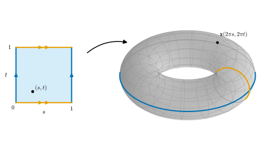
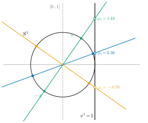

3.4 몫공간
이 절의 목표
- 동치관계로 점들을 붙인 집합에 몫위상을 주고, 몫사상의 특징적 성질로 몫공간에서 나가는 사상의 연속성을 판정할 수 있다.
- \(\R/\Z \cong S^1\)을 증명하고, 정사각형의 마주 보는 변을 붙인 몫공간에서 원환면으로 가는 연속 전단사를 만들 수 있다.
- 실사영공간 \(\RP^n\)을 몫공간으로 정의하고, \(S^n/{\pm} \cong \RP^n\)과 \(U_i \cong \R^n\)(차트 \(\varphi_i\))을 증명할 수 있다.
선수 지식
동기
3.3절에서 원환면을 원 두 개의 곱 \(S^1 \times S^1\)으로 만들었다. 원환면을 만드는 더 손에 잡히는 방법이 있다. 정사각형 종이의 왼쪽 변과 오른쪽 변을 붙이면 원기둥이 되고, 원기둥의 두 끝 원을 다시 붙이면 원환면이 된다(그림 3.4.1). 이것을 수학으로 옮기려면 두 가지가 필요하다. 첫째, “붙인다”는 것은 서로 다른 점을 “같은 점으로 본다”는 뜻이므로, 어떤 점들을 같은 점으로 볼지 정하는 규칙(동치관계)이 있어야 한다. 둘째, 그렇게 얻은 새 집합에 위상을 주어야 한다. 이 절은 이 둘을 다루고, 이 장의 두 번째 질문 “공간을 이어 붙여 새 공간을 만들 수 있는가?”에 답한다.
같은 방법으로 실사영공간 \(\RP^n\)도 만든다. \(\RP^n\)의 점은 \(\R^{n+1}\)에서 원점을 지나는 직선이다. 한 직선 위의 원점 아닌 점들을 모두 “같은 점”으로 보면 된다. 이 공간은 \(\R^{n+1}\) 안에 자연스럽게 놓여 있지 않다. 둘러싼 공간 없이 “스스로 주어진” 공간의 첫 예이며, 11장의 추상 다양체로 가는 다리다.

동치관계와 몫집합
정의 3.4.1 (동치관계와 몫집합, equivalence relation and quotient set). 집합 \(X\) 위의 관계 \(\sim\)가 모든 \(x, y, z \in X\)에 대하여 다음 세 조건을 만족하면 동치관계(equivalence relation)라 한다.
- (반사율) \(x \sim x\).
- (대칭률) \(x \sim y\)이면 \(y \sim x\).
- (추이율) \(x \sim y\)이고 \(y \sim z\)이면 \(x \sim z\).
\(x\)와 동치인 점 전체 \([x] = \{y \in X : y \sim x\}\)를 \(x\)의 동치류(equivalence class)라 하고, 동치류 전체의 집합을 \(X/{\sim}\)로 쓰고 몫집합(quotient set)이라 한다. \(\pi(x) = [x]\)로 정의한 전사 \(\pi\colon X \to X/{\sim}\)를 자연스러운 사영이라 한다.
동치류들은 \(X\)를 겹치지 않게 나눈다. 모든 \(x\)는 자기 동치류 \([x]\)에 들어 있고(반사율), 두 동치류는 같거나 서로소다. \(z \in [x] \cap [y]\)이면 \(z \sim x\), \(z \sim y\)이므로 대칭률과 추이율에서 \(x \sim y\)이고, 그러면 다시 추이율에서 \([x] = [y]\)이기 때문이다. “\(x\)와 \(y\)를 같은 점으로 본다”는 것은 \(\pi(x) = \pi(y)\), 즉 \(x \sim y\)라는 뜻이다.
예 3.4.2 (이 절의 동치관계들). (a) \(\R\)에서 \(x \sim y \iff x - y \in \Z\). 동치류는 \([x] = x + \Z = \{x + k : k \in \Z\}\)이고 몫집합을 \(\R/\Z\)로 쓴다. 각 동치류는 \([0, 1)\)에 꼭 한 점을 가진다.
(b) 정사각형 \([0, 1]^2\)에서
\([0, 1]\)의 두 수의 차가 정수이면 그 차는 \(0\)이거나 \(\pm 1\)이다. 따라서 안쪽 점 \((s, t)\) (\(0 \lt s, t \lt 1\))의 동치류는 자기 자신 하나뿐이고, 변 위의 점은 \((0, t) \sim (1, t)\) (\(0 \lt t \lt 1\))와 \((s, 0) \sim (s, 1)\) (\(0 \lt s \lt 1\))처럼 둘씩 짝지어지며, 네 꼭짓점은 한 동치류를 이룬다. 세 조건은 “차가 정수”라는 관계가 반사적, 대칭적, 추이적(정수의 합은 정수)이라는 데서 나온다.
(c) \(\R^{n+1} \setminus \{0\}\)에서 \(x \sim y \iff\) 어떤 \(\lambda \in \R \setminus \{0\}\)에 대하여 \(y = \lambda x\). 추이율은 \(y = \lambda x\), \(z = \mu y\)이면 \(z = (\mu\lambda)x\)이고 \(\mu\lambda \ne 0\)이기 때문이다. 동치류 \([x]\)는 원점을 지나는 직선 \(\{\lambda x : \lambda \in \R\}\)에서 원점을 뺀 것이다.
(d) 구면 \(S^n\)에서 \(x \sim y \iff y = \pm x\). 동치류는 대척점의 쌍 \(\{x, -x\}\)이고 몫집합을 \(S^n/{\pm}\)로 쓴다.
비예 3.4.3. \(\R\)에서 “\(x \sim y \iff \abs{x - y} \lt 1\)”은 반사적이고 대칭적이지만 동치관계가 아니다. \(0 \sim 0.6\)이고 \(0.6 \sim 1.2\)이지만 \(0 \not\sim 1.2\)이므로 추이율을 어긴다. “가깝다”는 관계는 동치관계가 아니다. 가까운 것끼리 계속 이어 가면 먼 것에 닿기 때문이다.
몫위상
몫집합 \(X/{\sim}\)에 어떤 위상을 주어야 할까? 사영 \(\pi\)는 연속이어야 한다. 즉 \(X/{\sim}\)의 열린집합 \(V\)는 역상 \(\pi^{-1}(V)\)가 \(X\)에서 열려 있어야 한다. 이 조건을 만족하는 \(V\)를 모두 열린집합으로 삼는 것이 몫위상이다.
정의 3.4.4 (몫위상, quotient topology). \(X\)가 위상공간이고 \(q\colon X \to Y\)가 집합 \(Y\) 위로의 전사라 하자.
를 \(q\)가 주는 몫위상(quotient topology)이라 한다. \(X\) 위의 동치관계 \(\sim\)에 대하여 사영 \(\pi\colon X \to X/{\sim}\)가 주는 몫위상을 준 \(X/{\sim}\)를 몫공간(quotient space)이라 한다. 일반적으로 위상공간 사이의 연속 전사 \(q\colon X \to Y\)가 “\(V \subseteq Y\)가 열려 있을 필요충분조건은 \(q^{-1}(V)\)가 열려 있는 것”을 만족하면 (즉 \(Y\)의 위상이 \(\mathcal{T}_q\)이면) \(q\)를 몫사상(quotient map)이라 한다.
\(\mathcal{T}_q\)가 위상인 것은 역상이 합집합, 교집합과 바꿀 수 있기 때문이다. \(q^{-1}(\varnothing) = \varnothing\), \(q^{-1}(Y) = X\)이고 \(q^{-1}(\bigcup_\alpha V_\alpha) = \bigcup_\alpha q^{-1}(V_\alpha)\), \(q^{-1}(V_1 \cap V_2) = q^{-1}(V_1) \cap q^{-1}(V_2)\)이다. 역상 \(q^{-1}(V)\)는 언제나 “\(q\)의 올(fiber) \(q^{-1}(y)\)들의 합집합”이다. 이런 부분집합, 즉 \(U = q^{-1}(q(U))\)인 \(U \subseteq X\)를 포화집합(saturated set)이라 한다. 그러면 \(Y\)의 열린집합은 \(X\)의 열린 포화집합과 일대일로 대응한다(\(V \mapsto q^{-1}(V)\), 역대응 \(U \mapsto q(U)\)).
예 3.4.5. (a) 위상동형사상은 몫사상이다. \(q\)가 위상동형사상이면 \(q^{-1}(V)\)가 열린 것과 \(V = q(q^{-1}(V))\)가 열린 것이 같다.
(b) \(\R/\Z\)(예 3.4.2(a))에서 \(V = \pi\big((-\tfrac14, \tfrac14)\big)\)는 열린집합이다. \(\pi^{-1}(V) = \bigcup_{k \in \Z} (k - \tfrac14,\ k + \tfrac14)\)가 열린구간들의 합집합이기 때문이다. 반면 \(\pi([0, \tfrac14))\)은 열려 있지 않다. 그 역상 \(\bigcup_k [k, k + \tfrac14)\)이 점 \(0\)에서 열려 있지 않다.
비예 3.4.6 (연속 전사이지만 몫사상이 아닌 사상). (a) 비예 3.2.15의 \(e\colon [0, 2\pi) \to S^1\), \(e(t) = (\cos t, \sin t)\)는 연속 전사이지만 몫사상이 아니다. \(V = e([0, 1))\)이라 하면 \(e\)가 단사이므로 \(e^{-1}(V) = [0, 1)\)이고 이것은 \([0, 2\pi)\)에서 열려 있다. 그러나 \(V\)는 \(S^1\)에서 열려 있지 않다(비예 3.2.15). 몫사상이라면 \(V\)가 열려 있어야 한다.
(b) 항등사상 \(\id\colon (\R, \text{표준}) \to (\R, \text{밀착})\)은 연속 전사이지만 몫사상이 아니다. \((0, 1)\)은 역상이 열려 있지만 밀착위상에서 열려 있지 않다. 몫위상은 \(q\)를 연속으로 만드는 위상 가운데 열린집합이 가장 많은 위상이다.
몫공간의 쓸모는 다음 정리에 있다. 몫공간에서 나가는 사상은 \(X\)로 끌어올려서 판정하면 된다. 이것은 부분공간으로 들어가는 사상에 대한 정리 3.3.5(c)와 짝을 이룬다.
정리 3.4.7 (몫사상의 특징적 성질). \(q\colon X \to Y\)가 몫사상이고 \(Z\)가 위상공간이라 하자.
- (a) 사상 \(g\colon Y \to Z\)가 연속일 필요충분조건은 \(g \circ q\colon X \to Z\)가 연속인 것이다.
- (b) 연속사상 \(f\colon X \to Z\)가 \(q\)의 각 올 위에서 상수이면(즉 \(q(x) = q(x')\)이면 \(f(x) = f(x')\)이면), \(\tilde f \circ q = f\)인 사상 \(\tilde f\colon Y \to Z\)가 꼭 하나 있고, \(\tilde f\)는 연속이다. \(\tilde f\)를 \(f\)가 유도하는 사상이라 한다.
이 정리가 말하는 것. 몫공간 위의 함수는 “동치인 점에서 같은 값을 주는 \(X\) 위의 함수”와 같은 것이고, 연속성도 \(X\)에서 판정한다.
증명. (a) (\(\Rightarrow\)) 연속사상의 합성이다. (\(\Leftarrow\)) \(W \subseteq Z\)가 열려 있으면 \(q^{-1}(g^{-1}(W)) = (g \circ q)^{-1}(W)\)가 열려 있다. 몫위상의 정의에 의해 \(g^{-1}(W)\)는 \(Y\)에서 열려 있다.
(b) \(y \in Y\)이면 \(q\)가 전사이므로 \(q(x) = y\)인 \(x\)가 있다. \(\tilde f(y) = f(x)\)로 정의한다. 다른 \(x'\)을 골라도 \(q(x') = y = q(x)\)이면 가정에서 \(f(x') = f(x)\)이므로 \(\tilde f\)는 잘 정의된다. 정의에서 \(\tilde f \circ q = f\)이고, 이 등식을 만족하는 사상은 \(q\)가 전사이므로 이것뿐이다. \(\tilde f \circ q = f\)가 연속이므로 (a)에 의해 \(\tilde f\)는 연속이다.
어떤 사상이 몫사상인지 확인할 때는 다음 명제가 편하다.
명제 3.4.8. \(q\colon X \to Y\)가 위상공간 사이의 연속 전사라 하자.
- (a) \(q\)가 열린사상이거나 닫힌사상이면 \(q\)는 몫사상이다.
- (b) \(q\)가 열린사상이고 \(W \subseteq X\)가 열려 있으면, 제한 \(q|_W\colon W \to q(W)\)도 몫사상이다.
증명. (a) \(q\)가 연속이므로 열린 \(V\)의 역상은 열려 있다. 거꾸로 \(q^{-1}(V)\)가 열려 있다고 하자. \(q\)가 전사이므로 \(V = q(q^{-1}(V))\)이고, \(q\)가 열린사상이면 이것은 열려 있다. 닫힌사상이면 여집합으로 같은 논증을 한다: \(Y \setminus V = q(X \setminus q^{-1}(V))\)이고 \(X \setminus q^{-1}(V)\)가 닫혀 있으므로 \(Y \setminus V\)가 닫혀 있다.
(b) \(q(W)\)는 \(Y\)에서 열려 있다. \(q|_W\)는 연속이고(정리 3.3.5) \(q(W)\) 위로의 전사다. \(W\)에서 열린 집합은 \(X\)에서도 열려 있으므로(명제 3.3.4(b)) 그 상은 \(Y\)에서 열려 있고, 따라서 \(q(W)\)에서도 열려 있다. 즉 \(q|_W\)는 열린사상이고, (a)에 의해 몫사상이다.
원과 원환면
예 3.4.9 (\(\R/\Z \cong S^1\)). \(f\colon \R \to S^1\), \(f(t) = (\cos 2\pi t,\ \sin 2\pi t)\)라 하자. \(f\)는 연속이고 전사다. 또 \(f(t) = f(t')\)일 필요충분조건은 \(t - t' \in \Z\)이다(코사인과 사인이 모두 같은 것은 각의 차가 \(2\pi\)의 정수배일 때뿐이다). 따라서 \(f\)는 \(\R/\Z\)의 동치류 위에서 상수이고, 정리 3.4.7(b)에 의해 연속사상 \(\tilde f\colon \R/\Z \to S^1\), \(\tilde f([t]) = f(t)\)를 유도한다. \(\tilde f\)는 전사이고, 서로 다른 동치류를 서로 다른 점으로 보내므로 단사다.
\(\tilde f\)가 열린사상임을 보이자. 먼저 \(f\)가 열린사상임을 보인다. 두 점의 거리에 대한 항등식
을 쓴다. \(W \subseteq \R\)가 열려 있고 \(t_0 \in W\)라 하자. \((t_0 - \delta,\ t_0 + \delta) \subseteq W\)인 \(\delta \in (0, \tfrac12)\)를 고르고 \(\varepsilon = 2\sin(\pi\delta) \gt 0\)으로 둔다. \(w \in S^1\)이고 \(\abs{w - f(t_0)} \lt \varepsilon\)이라 하자. \(f\)는 길이 \(1\)인 구간 \((t_0 - \tfrac12,\ t_0 + \tfrac12]\) 위에서 이미 전사이므로 \(w = f(t)\)인 \(t\)가 이 구간에 있다. (3.4.3)에서 \(2\sin(\pi\abs{t - t_0}) \lt 2\sin(\pi\delta)\)이고, \(\sin\)은 \([0, \pi/2]\)에서 순증가이므로 \(\abs{t - t_0} \lt \delta\)이다. 즉 \(w \in f(W)\)이다. 따라서 \(f(W)\)는 각 점을 중심으로 하는 \(S^1\)의 공을 포함하므로 \(S^1\)에서 열려 있다.
이제 \(V \subseteq \R/\Z\)가 열려 있으면 \(\tilde f(V) = f(\pi^{-1}(V))\)이고 \(\pi^{-1}(V)\)가 열려 있으므로 \(\tilde f(V)\)는 열려 있다. \(\tilde f\)는 연속 전단사 열린사상이므로 명제 3.2.13에 의해 위상동형사상이다. 또 \(f\) 자신은 연속 전사 열린사상이므로 명제 3.4.8(a)에 의해 몫사상이다.
검증: verify/v-3-4-quotient-spaces.py
예 3.4.10 (원환면: 정사각형의 몫공간). (3.4.1)의 동치관계로 만든 몫공간 \([0, 1]^2/{\sim}\)을 생각하자. 예 3.4.9의 \(f\)로
로 두면 \(g\)는 연속이고(정리 3.3.15(b)) 전사다(\(f\)가 \([0, 1]\) 위에서 이미 전사). 예 3.4.9에 의해 \(g(s, t) = g(s', t')\)일 필요충분조건은 \(s - s' \in \Z\)이고 \(t - t' \in \Z\)인 것, 즉 \((s, t) \sim (s', t')\)이다. 따라서 \(g\)는 연속 전단사 \(\tilde g\colon [0, 1]^2/{\sim} \to T^2\)를 유도한다(정리 3.4.7(b)). 예 3.3.17의 위상동형사상 \(\Phi\colon T^2 \to S\)와 합성하면 회전 원환면 \(S \subseteq \R^3\)으로 가는 연속 전단사 \(\Phi \circ \tilde g\)를 얻고, 정의에서 \(\Phi(\tilde g([s, t])) = \mathbf{x}(2\pi s, 2\pi t)\)이다(그림 3.4.1).
\(\tilde g\)는 위상동형사상인가? 역사상이 연속임을 직접 보이려면 \([0, 1]^2/{\sim}\)의 열린집합을 하나하나 다뤄야 해서 번거롭다(특히 네 꼭짓점이 붙은 점 근처). 3.6절에서 컴팩트성을 이용해 이것을 한 줄로 증명한다. 그때까지 \(\tilde g\)는 “연속 전단사”로 남겨 둔다.
검증: verify/v-3-4-quotient-spaces.py
실사영공간
정의 3.4.11 (실사영공간, real projective space). 예 3.4.2(c)의 동치관계(\(y = \lambda x\), \(\lambda \ne 0\))로 만든 몫공간 \((\R^{n+1} \setminus \{0\})/{\sim}\)을 \(n\)차원 실사영공간(real projective space)이라 하고 \(\RP^n\)으로 쓴다. \(x = (x^1, \dots, x^{n+1})\)의 동치류를 동차좌표로 \([x] = [x^1 : \dots : x^{n+1}]\)이라 쓰고, 사영을 \(\pi\colon \R^{n+1} \setminus \{0\} \to \RP^n\)으로 쓴다.
동차좌표는 한 점을 나타내는 방법이 여러 가지다. \([1 : 2 : 3] = [2 : 4 : 6] = [-1 : -2 : -3]\)이다. \(\RP^n\)의 점 하나는 \(\R^{n+1}\)에서 원점을 지나는 직선 하나다. 왜 원점을 빼는가? 다음 비예가 답한다.
비예 3.4.12 (원점을 빼지 않으면). \(\R^{n+1}\) 전체에서 “\(y = \lambda x\)인 \(\lambda \ne 0\)이 있다”로 동치관계를 주면 원점의 동치류는 \(\{0\}\) 하나이고, 나머지는 위와 같다. 이 몫공간에서 \([0]\)을 포함하는 열린집합 \(V\)를 보자. \(\pi^{-1}(V)\)는 원점을 포함하는 열린집합이므로 어떤 공 \(B_\varepsilon(0)\)을 포함한다. 원점을 지나는 모든 직선은 이 공과 만나고, \(\pi^{-1}(V)\)는 포화집합이므로 그 직선 전체를 포함한다. 따라서 \(\pi^{-1}(V) = \R^{n+1}\), 즉 \(V\)는 몫공간 전체다. \([0]\)의 근방은 전체 공간 하나뿐이어서 \([0]\)은 다른 모든 점에 “달라붙어” 있다. 이런 점은 좋은 공간에 있을 수 없으므로 원점을 뺀다.
명제 3.4.13. 사영 \(\pi\colon \R^{n+1} \setminus \{0\} \to \RP^n\)은 열린사상이다.
증명. \(X = \R^{n+1} \setminus \{0\}\)이라 하자. \(\lambda \ne 0\)이면 \(m_\lambda(x) = \lambda x\)는 \(X\)의 위상동형사상이다(역사상이 \(m_{1/\lambda}\)이고 둘 다 성분이 일차식이다). \(U \subseteq X\)가 열려 있으면 \(\pi^{-1}(\pi(U)) = \{y : y \sim x \text{인 } x \in U \text{가 있다}\} = \bigcup_{\lambda \ne 0} m_\lambda(U)\)이고, 각 \(m_\lambda(U)\)는 열려 있으므로(위상동형사상은 열린사상) 합집합도 열려 있다. 몫위상의 정의에 의해 \(\pi(U)\)는 열려 있다.
명제 3.4.14 (\(S^n/{\pm} \cong \RP^n\)). \(p\colon S^n \to S^n/{\pm}\)를 예 3.4.2(d)의 사영이라 하자. 포함사상 \(i\colon S^n \to \R^{n+1} \setminus \{0\}\)이 유도하는 사상 \(F\colon S^n/{\pm} \to \RP^n\), \(F(p(x)) = [x]\)는 위상동형사상이다.
이 명제가 말하는 것. 각 직선에서 단위벡터 하나를 대표로 고르면 된다. 직선마다 단위벡터가 정확히 두 개(\(\pm x\)) 있으므로, \(\RP^n\)은 구면에서 대척점을 붙인 공간이다.
증명 아이디어: 정리 3.4.7(b)를 두 번 쓴다. 한 번은 포함사상 \(i\)로 \(F\)를, 한 번은 정규화 \(x \mapsto x/\abs{x}\)로 역방향 사상 \(G\)를 만든다.
증명. \(X = \R^{n+1} \setminus \{0\}\)이라 하자. \(F\)의 연속성. \(\pi \circ i\colon S^n \to \RP^n\)은 연속이고, \([-x] = [x]\)이므로 \(p\)의 동치류 \(\{x, -x\}\) 위에서 상수다. 정리 3.4.7(b)에 의해 \(F \circ p = \pi \circ i\)인 연속사상 \(F\)가 있다.
역방향 사상. \(\rho\colon X \to S^n\), \(\rho(x) = x/\abs{x}\)는 연속이다(성분이 분모가 양수인 연속함수, 정리 3.3.5(c)). \(\lambda \ne 0\)이면 \(\rho(\lambda x) = (\lambda/\abs{\lambda})\,\rho(x) = \pm\rho(x)\)이므로 \(p \circ \rho\)는 \(\sim\)의 동치류 위에서 상수다. 정리 3.4.7(b)에 의해 \(G \circ \pi = p \circ \rho\)인 연속사상 \(G\colon \RP^n \to S^n/{\pm}\)가 있다.
서로 역. \(x \in S^n\)이면 \(\rho(x) = x\)이므로 \(G(F(p(x))) = G(\pi(x)) = p(\rho(x)) = p(x)\)이다. \(x \in X\)이면 \(\rho(x) = x/\abs{x} \sim x\)이므로 \(F(G(\pi(x))) = F(p(\rho(x))) = \pi(\rho(x)) = \pi(x)\)이다. \(p\)와 \(\pi\)가 전사이므로 \(G \circ F = \id\), \(F \circ G = \id\)이다. 따라서 \(F\)는 연속인 역사상 \(G\)를 갖는 전단사, 즉 위상동형사상이다.
이제 \(\RP^n\)의 각 점 근처가 \(\R^n\)처럼 생겼음을 보이자. §7의 기준 예제에 적힌 대로 다음 집합과 사상을 쓴다.
명제 3.4.15 (\(\RP^n\)의 좌표근방). \(i = 1, \dots, n+1\)에 대하여 \(U_i = \{[x] \in \RP^n : x^i \ne 0\}\)이라 하고
로 두자. 모자 표시는 그 성분을 뺀다는 뜻이다. 그러면 (a) \(U_i\)는 잘 정의되고 \(\RP^n\)에서 열려 있으며, \(U_1, \dots, U_{n+1}\)은 \(\RP^n\)을 덮는다. (b) \(\varphi_i\)는 잘 정의된 위상동형사상이고, 역사상은
이다(\(1\)이 \(i\)번째 자리에 온다).
증명. \(X = \R^{n+1} \setminus \{0\}\)이라 하자. (a) \(x^i \ne 0\)이라는 조건은 \(x\)를 \(\lambda x\) (\(\lambda \ne 0\))로 바꾸어도 변하지 않으므로 \(U_i\)는 대표를 어떻게 고르든 잘 정의된다. \(X_i = \pi^{-1}(U_i) = \{x \in X : x^i \ne 0\}\)은 연속함수 \(x \mapsto x^i\)에 의한 \(\R \setminus \{0\}\)의 역상이므로 열려 있고, 몫위상의 정의에 의해 \(U_i\)는 열려 있다. \(x \ne 0\)이면 어떤 성분 \(x^i\)가 \(0\)이 아니므로 \([x] \in U_i\)이다.
(b) \(h_i\colon X_i \to \R^n\), \(h_i(x) = (x^1/x^i, \dots, \widehat{x^i/x^i}, \dots, x^{n+1}/x^i)\)는 성분이 분모가 \(0\)이 아닌 유리함수이므로 연속이고, \(h_i(\lambda x) = h_i(x)\)이므로 동치류 위에서 상수다. 명제 3.4.13과 명제 3.4.8(b)에 의해 \(\pi|_{X_i}\colon X_i \to U_i\)는 몫사상이므로, 정리 3.4.7(b)에 의해 \(\varphi_i \circ \pi = h_i\)인 연속사상 \(\varphi_i\colon U_i \to \R^n\)이 있다. 이것이 (3.4.5)다. 역방향으로 \(j_i\colon \R^n \to X_i\), \(j_i(u) = (u^1, \dots, u^{i-1}, 1, u^i, \dots, u^n)\)은 연속이므로 \(\psi_i = \pi \circ j_i\colon \R^n \to U_i\)는 연속이다(값이 \(U_i\)에 있으므로 정리 3.3.5(c)). \(\varphi_i(\psi_i(u)) = h_i(j_i(u)) = u\)이다(\(i\)번째 성분이 \(1\)이므로 나눗셈이 아무것도 바꾸지 않는다). 또 \(\psi_i(\varphi_i[x]) = [x^1/x^i : \dots : 1 : \dots : x^{n+1}/x^i] = [x]\)이다 (대표에 \(x^i\)를 곱한다). 따라서 \(\varphi_i\)는 연속인 역사상 \(\psi_i\)를 갖는 전단사다.
예 3.4.16 (\(\RP^1\)). \(n = 1\)이면 \(\RP^1\)은 평면에서 원점을 지나는 직선들의 공간이다. \(U_1 = \{[x^1 : x^2] : x^1 \ne 0\}\)은 세로축이 아닌 직선들이고 \(\varphi_1[x^1 : x^2] = x^2/x^1\)은 그 직선의 기울기다. 기하적으로 \(\varphi_1[x]\)는 직선 \([x]\)가 세로선 \(x^1 = 1\)과 만나는 점의 높이다(그림 3.4.2). \(U_1\)에 빠진 점은 세로축 \([0 : 1]\) 하나뿐이다. 마찬가지로 \(\varphi_2[x^1 : x^2] = x^1/x^2\)이고, \(U_2\)에 빠진 점은 가로축 \([1 : 0]\)이다. 두 좌표근방이 겹치는 곳 \(U_1 \cap U_2\)에서는 \(\varphi_2 = 1/\varphi_1\)이다. 예를 들어 \([1 : 2]\)의 두 좌표는 \(\varphi_1 = 2\), \(\varphi_2 = 1/2\)이다. 기울기가 커질수록 직선은 세로축 \([0 : 1]\)에 다가가고, \(\varphi_2\)는 \(0\)에 다가간다.
검증: verify/v-3-4-quotient-spaces.py

요약
- 동치관계는 반사·대칭·추이율을 만족하는 관계이고, 동치류들이 집합을 겹치지 않게 나눈다. 몫집합 \(X/{\sim}\)는 동치류들의 집합이다.
- 몫위상에서 \(V\)가 열려 있다는 것은 \(\pi^{-1}(V)\)가 열려 있다는 뜻이다. 몫공간에서 나가는 사상은 \(X\)로 끌어올려 연속성을 판정한다(정리 3.4.7).
- 연속 전사가 열린사상(또는 닫힌사상)이면 몫사상이다. 이것으로 \(\R/\Z \cong S^1\)을 증명했다(예 3.4.9).
- 정사각형의 마주 보는 변을 붙인 \([0,1]^2/{\sim}\)에서 원환면 \(T^2\)로 가는 연속 전단사 \(\tilde g\)가 있다. 위상동형임은 3.6절에서 보인다.
- \(\RP^n = (\R^{n+1} \setminus \{0\})/{\sim}\)는 \(S^n/{\pm}\)과 위상동형이고, \(U_i = \{x^i \ne 0\}\)마다 위상동형사상 \(\varphi_i\colon U_i \to \R^n\)이 있다(명제 3.4.15).
다음 절에서는 몫공간이 나빠질 수 있는 대표적인 방식, 즉 두 점이 근방으로 분리되지 않는 현상을 본다. 이것을 막는 하우스도르프 조건과, 열린집합이 “너무 많지 않다”는 제2가산 조건을 정의하고, \(\RP^n\)이 두 조건을 모두 만족함을 증명한다.
연습문제
연습 3.4.1 ★ 다음 관계가 동치관계인지 판별하고, 동치관계이면 동치류를 설명하여라. (a) \(\R\)에서 \(x \sim y \iff x - y \in \mathbb{Q}\) (b) \(\R\)에서 \(x \sim y \iff xy \gt 0\) (c) \(\R^2\)에서 \(x \sim y \iff \abs{x} = \abs{y}\) (d) \(\R\)에서 \(x \sim y \iff \abs{x - y} \le 1\)
풀이
(a) 동치관계다. \(0 \in \mathbb{Q}\), \(-q \in \mathbb{Q}\), 유리수의 합은 유리수. 동치류는 \(x + \mathbb{Q}\)이다.
(b) 동치관계가 아니다. \(0 \cdot 0 = 0\)이므로 \(0 \not\sim 0\), 반사율을 어긴다. (\(\R \setminus \{0\}\)에서는 동치관계이고 동치류는 양수 전체와 음수 전체다.)
(c) 동치관계다(등호가 동치관계이므로). 동치류는 원점을 중심으로 하는 원 \(\{\abs{x} = c\}\) (\(c \gt 0\))과 원점 \(\{0\}\)이다.
(d) 동치관계가 아니다. \(0 \sim 1\), \(1 \sim 2\)이지만 \(0 \not\sim 2\)이다(비예 3.4.3와 같은 현상).
연습 3.4.2 ★ (3.4.1)의 동치관계에서 다음 점의 동치류를 구하여라. (a) \((\tfrac12, \tfrac12)\) (b) \((0, \tfrac13)\) (c) \((\tfrac14, 1)\) (d) \((1, 0)\)
풀이
\([0,1]\)의 두 수의 차가 정수이려면 같거나 \(0\)과 \(1\)이어야 한다. (a) \(\{(\tfrac12, \tfrac12)\}\). (b) \(\{(0, \tfrac13), (1, \tfrac13)\}\). (c) \(\{(\tfrac14, 0), (\tfrac14, 1)\}\). (d) \(\{(0,0), (1,0), (0,1), (1,1)\}\).
연습 3.4.3 ★ \(\RP^2\)의 점 \(P = [1 : 2 : -2]\)에 대하여 (a) \(P\)가 \(U_1, U_2, U_3\) 모두에 속함을 확인하고 \(\varphi_1(P), \varphi_2(P), \varphi_3(P)\)를 구하여라. (b) \(\varphi_1^{-1}(2, -2)\)를 동차좌표로 쓰고, \(\varphi_2(\varphi_1^{-1}(2, -2))\)를 구하여라. (c) \([2 : 4 : -4]\)로 계산해도 (a)의 답이 같음을 확인하여라.
풀이
(a) 세 성분이 모두 \(0\)이 아니므로 \(P \in U_1 \cap U_2 \cap U_3\)이다. \(\varphi_1(P) = (2/1,\ -2/1) = (2, -2)\), \(\varphi_2(P) = (1/2,\ -2/2) = (\tfrac12, -1)\), \(\varphi_3(P) = (1/(-2),\ 2/(-2)) = (-\tfrac12, -1)\).
(b) (3.4.6)에서 \(\varphi_1^{-1}(2, -2) = [1 : 2 : -2] = P\)이고, 따라서 \(\varphi_2(\varphi_1^{-1}(2, -2)) = (\tfrac12, -1)\)이다. 일반적으로 \(\varphi_2(\varphi_1^{-1}(u^1, u^2)) = (1/u^1,\ u^2/u^1)\)이다.
(c) \(\varphi_1[2 : 4 : -4] = (4/2, -4/2) = (2, -2)\) 등으로 같다. \(\varphi_i\)가 잘 정의된다는 것이 바로 이것이다.
검증: verify/v-3-4-quotient-spaces.py
연습 3.4.4 ★ \([0, 1]\)에서 \(0 \sim 1\)만 붙이고 나머지 점은 자기 자신과만 동치로 둔 몫공간을 \([0, 1]/\{0 \sim 1\}\)이라 하자. \(f(t) = (\cos 2\pi t, \sin 2\pi t)\)가 연속 전단사 \([0, 1]/\{0 \sim 1\} \to S^1\)을 유도함을 보여라.
연습 3.4.5 ★★ 연습 3.4.1(a)의 몫공간 \(\R/\mathbb{Q}\)의 몫위상은 밀착위상임을 보여라.
힌트
공집합이 아닌 열린 \(V\)에 대해 \(\pi^{-1}(V)\)는 어떤 열린구간 \(I\)를 포함하는 포화집합이다. 모든 실수 \(x\)에 대해 \(x - q \in I\)인 유리수 \(q\)가 있다.
풀이
\(V \ne \varnothing\)이 열려 있다고 하자. \(U = \pi^{-1}(V)\)는 공집합이 아닌 열린집합이므로 어떤 열린구간 \(I = (a, b)\)를 포함한다. \(x \in \R\)이면 구간 \((x - b,\ x - a)\)에 유리수 \(q\)가 있고, 그러면 \(x - q \in (a, b) = I \subseteq U\)이다. \(x \sim x - q\)이고 \(U\)는 포화집합(동치류들의 합집합)이므로 \(x \in U\)이다. 따라서 \(U = \R\)이고 \(V = \pi(\R) = \R/\mathbb{Q}\)이다. 열린집합이 \(\varnothing\)과 전체뿐이므로 밀착위상이다.
연습 3.4.6 ★★ \(\RP^1\)과 \(S^1\) 사이에 연속 전단사가 있음을 보여라. \(Q(x) = \dfrac{\big((x^1)^2 - (x^2)^2,\ 2x^1x^2\big)}{(x^1)^2 + (x^2)^2}\) (\(x \in \R^2 \setminus \{0\}\))를 쓴다.
힌트
\(x = \rho(\cos\theta, \sin\theta)\)이면 \(Q(x) = (\cos 2\theta, \sin 2\theta)\)이다. 복소수로는 \(z \mapsto z^2/\abs{z}^2\)이다.
풀이
\(Q\)는 분모가 양수인 유리함수를 성분으로 가지므로 연속이다. \(x = \rho(\cos\theta, \sin\theta)\) (\(\rho \gt 0\))이면 배각공식에서 \(Q(x) = (\cos 2\theta, \sin 2\theta) \in S^1\)이다. \(Q(\lambda x) = \lambda^2 Q(x)/\lambda^2 = Q(x)\)이므로 \(Q\)는 동치류 위에서 상수이고, 정리 3.4.7(b)에 의해 연속사상 \(\tilde Q\colon \RP^1 \to S^1\)을 유도한다. 전사: \((\cos\alpha, \sin\alpha) = Q(\cos(\alpha/2), \sin(\alpha/2))\). 단사: \(Q(x) = Q(y)\)이고 \(x, y\)의 방향각이 \(\theta, \theta'\)이면 \(2\theta - 2\theta' \in 2\pi\Z\), 즉 \(\theta - \theta' \in \pi\Z\)이므로 \(y\)는 \(x\)의 (양 또는 음의) 실수배이고 \([x] = [y]\)이다. (3.6절의 결과로 \(\tilde Q\)는 위상동형사상이 된다: \(\RP^1 \cong S^1\).)
검증: verify/v-3-4-quotient-spaces.py